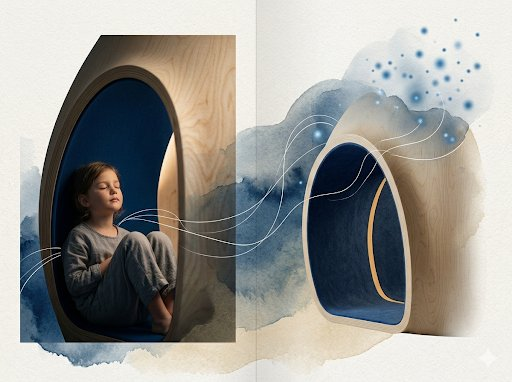

The Blue Maker → Signature Framework
Architecture · Neuroscience · Wellbeing. Learning ecosystems and neurocompatible environments — designing for development, wellbeing and human diversity.

Why It Matters
Today’s childhood faces sensory overload, stress and disconnection from nature. The environment directly impacts the developing nervous system.
“Not all brains perceive the same way. But all brains are affected by the environment.” — Florencia Zampieri | The Blue Maker
Architecture can lower environmental stress and support the development of every child.
Factors Affecting Neurodevelopment
Principles of Neurocompatible Design
Light · Acoustics · Colour · Circulation · Biophilia · Materiality
Applications
Educating for a Healthy Future
The Blue Maker: we design environments that care for human development, integrating architecture, neuroscience and wellbeing to build more conscious and sustainable ecosystems of life.